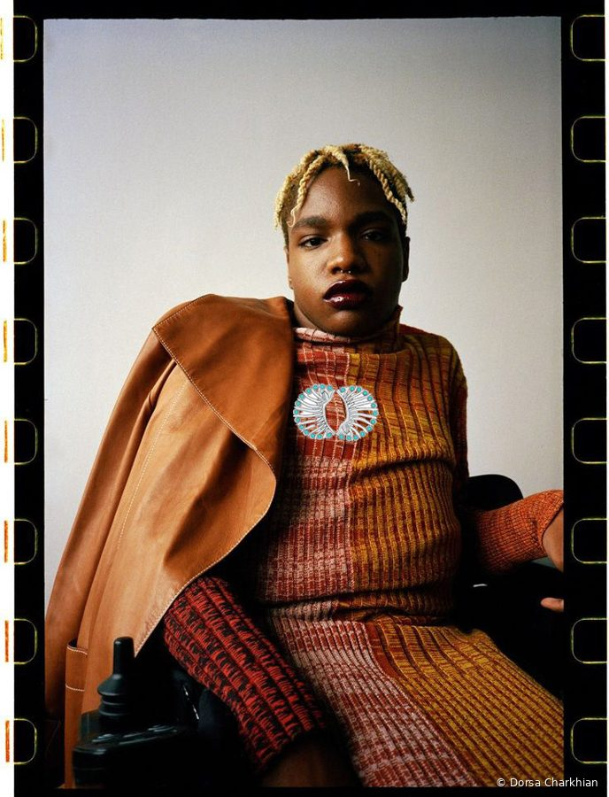
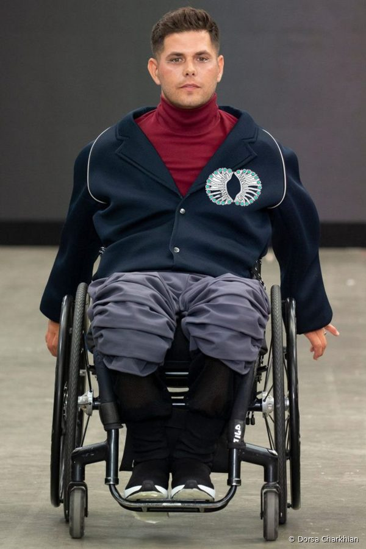

Design research · Speculative wearable
AI-Brooch: Designing an heirloom that speaks
A short design-research paper on assistive communication, culture and the body.
Abstract
Assistive communication devices are often designed as medical equipment: effective, but visible in ways that can mark their users as different. AI-Brooch asks what would change if a communication aid were designed as an heirloom instead. The concept is a brooch based on an Achaemenid gold lion, imagined in two editions: a silent one, worn as jewelry, and a speaking one, whose setting holds non-invasive sensors and whose radiating rays act as a speaker grille, so the ornament can voice what its wearer means. Using research through design fiction, the project explores how cultural form, personal sensing and AI might come together on the body, and the questions of agency, privacy and identity this raises.

1. Motivation
People who use assistive technologies often report that the devices shape how others see them, sometimes more than the disability itself [1]. Jewelry works the other way: it is chosen, worn with intention, and carries identity and memory [2]. My practice redesigns historical women’s ornament as contemporary wearable form. AI-Brooch brings that practice to a health question: can an assistive device be something a person is proud to wear?
2. Background
Speech neuroprostheses have advanced quickly. Implanted brain–computer interfaces now decode attempted speech at conversational speeds for people with paralysis [3], [4]. Non-invasive approaches, which a wearable would require, remain far less accurate and are mostly studied in the lab [5]. At the same time, neural data raises distinct ethical concerns about privacy, agency and identity [6]. AI-Brooch sits deliberately in the gap between what is technically possible today and what a person might want to wear in daily life.
3. Design concept
The brooch is based on an Achaemenid gold lion ornament. The lion’s mane is redrawn as a ring of radiating rays set with blue and violet stones. In the silent edition the piece is closed and solid, like an heirloom. In the speaking edition the setting opens to hold sensors resting on the chest, and the rays become a speaker grille. A companion app would let the wearer shape the voice’s tone, language and emotional nuance, so that the output sounds like them rather than like a device.
Imagine a wearer entering a room. With a gentle activation of thought, the brooch introduces them, and they join the conversation naturally. Over time the system learns the wearer’s own patterns, so the tool adapts to the person rather than the person adapting to the tool.


4. A design fiction: 2074
The concept is framed as a future in which the boundaries between objects and personal identity have blurred. By 2074, static communication aids such as text-to-speech devices have become relics: often clunky and impersonal, they cannot offer the adaptability and emotional connection people expect. Jewelry as a purely decorative object no longer suffices either. A new generation of wearables merges technology with cultural narratives, where the line between function and emotional connection blurs.
In transition design terms, this fiction is a form of future visioning [9]: describing a desired long-term future first, then asking which steps today could move assistive technology toward it.
5. Method
The project uses research through design fiction [7] and speculative design [8]: making a plausible future object in order to question the present, rather than to propose a product. I developed the concept and drawings by hand and used generative image tools to visualize materials and light. Sketches and fabrication details are intentionally not published here.
6. Questions the concept raises
- Agency. Who decides what the brooch says, and how does the wearer stay in control of a voice produced by AI?
- Privacy. What should never leave the body when the input is neural or physiological data?
- Identity. Does culturally meaningful form change how assistive technology is perceived by wearers and by others?
- Language. How should a speaking device handle multilingual users, dialect and emotional tone?
7. Reflection
This project changed how I see design: as a bridge between past and future, and between utility and identity. Imagining this future showed me how much design can shape social norms and personal experience. It is not only about making objects, but about imagining the futures we want to live in, where no one is left unheard.
8. Limitations and next steps
AI-Brooch is speculative: it is not a working device and has not been evaluated with users. A next step would be co-design with people who use augmentative and alternative communication and with speech-language pathologists, to test whether the questions above match their priorities, and to explore which parts of the concept are achievable with today’s non-invasive sensing.
References
- Shinohara, K., & Wobbrock, J. O. (2011). In the shadow of misperception: Assistive technology use and social interactions. Proceedings of CHI ’11, 705–714. ACM. doi:10.1145/1978942.1979044
- Versteeg, M., van den Hoven, E., & Hummels, C. (2016). Interactive jewellery: A design exploration. Proceedings of TEI ’16. ACM.
- Willett, F. R., et al. (2023). A high-performance speech neuroprosthesis. Nature, 620, 1031–1036. doi:10.1038/s41586-023-06377-x
- Card, N. S., et al. (2024). An accurate and rapidly calibrating speech neuroprosthesis. New England Journal of Medicine, 391(7), 609–618. doi:10.1056/NEJMoa2314132
- Défossez, A., Caucheteux, C., Rapin, J., Kabeli, O., & King, J.-R. (2023). Decoding speech perception from non-invasive brain recordings. Nature Machine Intelligence, 5, 1097–1107. doi:10.1038/s42256-023-00714-5
- Yuste, R., et al. (2017). Four ethical priorities for neurotechnologies and AI. Nature, 551, 159–163. doi:10.1038/551159a
- Blythe, M. (2014). Research through design fiction: Narrative in real and imaginary abstracts. Proceedings of CHI ’14, 703–712. ACM. doi:10.1145/2556288.2557098
- Dunne, A., & Raby, F. (2013). Speculative Everything: Design, Fiction, and Social Dreaming. MIT Press.
- Irwin, T. (2015). Transition design: A proposal for a new area of design practice, study, and research. Design and Culture, 7(2), 229–246. doi:10.1080/17547075.2015.1051829
© 2025 Dorsa Charkhian. Concept, text and drawings by the author. Please contact me before reusing any part of this work.